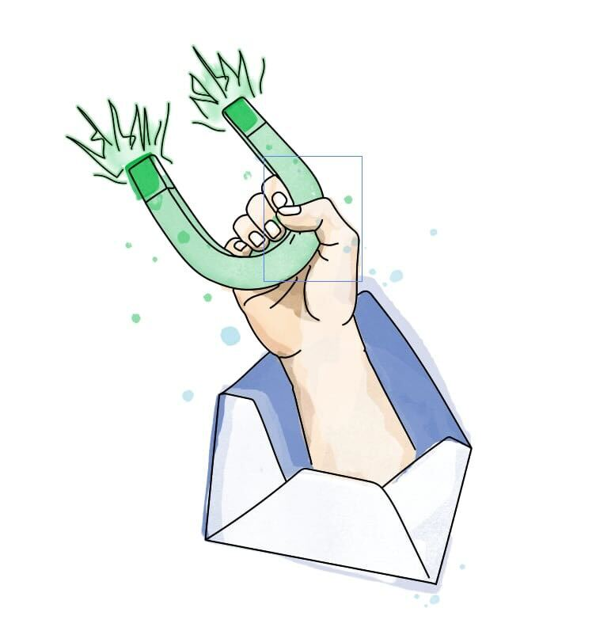

Every service we offer is designed to sit at the intersection of sales and marketing. Not owned by one team. Used by both. The result is a pipeline that doesn't leak leads between handoffs.
In most biotech companies, sales and marketing operate in parallel — same goals, separate plans. Marketing produces content the sales team doesn't use. Sales generates leads that marketing can't nurture. The gap between the two is where leads go to die.
We build deliverables that both teams work on, both teams use, and both teams benefit from. That's what alignment actually looks like.
Your company page shouldn't be the only voice on LinkedIn. The most effective biotech companies turn their sales and BD teams into content contributors — with marketing providing the strategy and support.
Executive ghostwriting — We write thought leadership content for your senior team, positioning them as trusted voices in their space.
Sales team training — Practical training for BD and sales reps to create their own LinkedIn content. Tailored to your company, your audience, and your commercial goals.
Content calendars and frameworks — Repeatable systems so content keeps flowing after we've set it up, with marketing maintaining oversight.
Sales teams act as marketing satellites. Marketing provides the playbook and quality control. Both teams are visible, both teams contribute, and the company's presence grows from multiple angles.
A 5-email opt-in sequence that captures leads by teaching something valuable. It's the most underused tool in biotech marketing — and it works as a shared KPI between sales and marketing.
Course strategy and topic selection — We identify the right educational angle based on your ICP's problems and your company's expertise.
Full course copywriting — Five emails written to educate, build trust, and move the reader closer to a commercial conversation.
Landing page and opt-in setup — Everything needed to capture emails, built in Kit and integrated with your site.
Marketing owns the content. Sales uses it as a conversion tool — sharing the opt-in link at conferences, on LinkedIn, and in outbound. Both teams can track who's signed up and who's engaged.

Once a lead is in your system, what happens next? Most biotech companies either follow up too aggressively or lose touch entirely. A well-built nurture sequence keeps leads warm with a mix of education and commercial nudges.
Nurture strategy — Mapping the right cadence, content mix, and commercial triggers for your audience and sales cycle.
Email copywriting — Emails that balance category-level value content with product and commercial messaging. Written to keep your company top of mind without burning the list.
Monitoring and iteration — Setting up the right signals so sales can see who's engaging and when to step in.
Sales contributes to the messaging — they know what objections come up, what language resonates. Marketing builds the system. Sales monitors and follows up at the right moment.
Ongoing nurture that keeps leads warm
Conferences are the one place where sales and marketing are physically in the same room — yet most companies treat them as a sales activity with a marketing backdrop. We turn conferences into a full-funnel system.
Pre-event LinkedIn strategy — Building visibility and scheduling conversations before the event starts.
Booth design and campaign assets — Created by our specialist designer to align with your brand and messaging goals.
Lead capture system — A clear process for capturing and categorising contacts during the event.
Post-event email nurture — Automated follow-up sequences that keep the conversation going after the conference ends.
Marketing builds the presence and the follow-up system. Sales fills the pipeline during the event. Both teams see the full journey from first impression to follow-up.
Pre-event, on-site, and post-event system
Let's talk about where your sales and marketing teams can start building together.
Practical insights on closing the gap between sales and marketing in life science — delivered to your inbox.